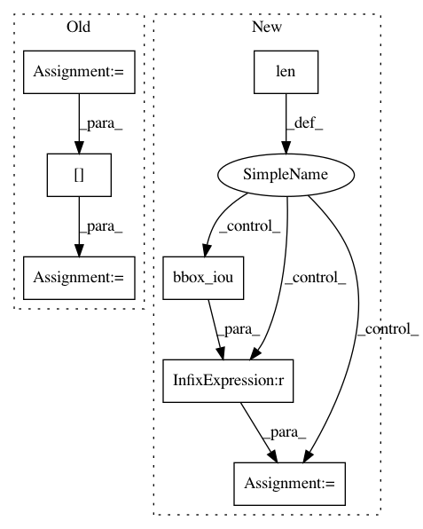

e4d62de5bc12d1e411adbfe4b76f15d157d77c65,utils/utils.py,,non_max_suppression,#Any#Any#Any#,295
Before Change
if len(det_class) == 1:
break
ious = bbox_iou(det_class[:1], det_class[1:])
if ious.max() > 0.5:
det_max.append(det_class[0].unsqueeze(0))
// Remove detections with IoU >= NMS threshold
det_class = det_class[1:][ious < nms_thres]
if len(det_max) > 0:
det_max = torch.cat(det_max).data
// Add max detections to outputs
After Change
dc = dc[1:][iou < nms_thres] // remove ious > threshold
elif nms_style == "AND": // requires overlap, single boxes erased
while len(dc) > 1:
iou = bbox_iou(dc[:1], dc[1:]) // iou with other boxes
if iou.max() > 0.5:
det_max.append(dc[:1])
dc = dc[1:][iou < nms_thres] // remove ious > threshold
elif nms_style == "MERGE": // weighted mixture box
while len(dc) > 0:
In pattern: SUPERPATTERN
Frequency: 3
Non-data size: 7
Instances
Project Name: ultralytics/yolov3
Commit Name: e4d62de5bc12d1e411adbfe4b76f15d157d77c65
Time: 2019-02-18
Author: glenn.jocher@ultralytics.com
File Name: utils/utils.py
Class Name:
Method Name: non_max_suppression
Project Name: ultralytics/yolov3
Commit Name: 2df8d7e9f6fd3a3e0233029bf39d4db66807a229
Time: 2019-03-15
Author: glenn.jocher@ultralytics.com
File Name: utils/utils.py
Class Name:
Method Name: non_max_suppression
Project Name: chainer/chainercv
Commit Name: a7706fbde22887909db42f96a696437c084c05db
Time: 2017-05-31
Author: Hakuyume@users.noreply.github.com
File Name: chainercv/evaluations/eval_detection_voc.py
Class Name:
Method Name: eval_detection_voc